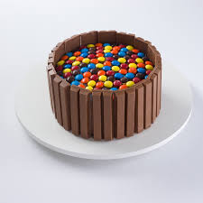

KitKat com M&M

Ingredientes
Chocolates Kit Kat
M&Ms
Doce de leite ou glacê
Laço de fita para "arrematar"
Modo de Preparo
1
Pegue os chocolates Kit Kat e vá grudando pares com o doce de leite ou glacê. Depois, coloque os M&M's dentro.
2
Para deixar o bolo ainda mais bonito, amarre um laço de fita entorno dele!
3
OBS:. os chocolates "Kit Kat" não são encontrados em todo o Brasil, mas você pode substitui-los pelos chocolates "BIS" (Laka) ou " Baton" (Garoto). Use sua criatividade!